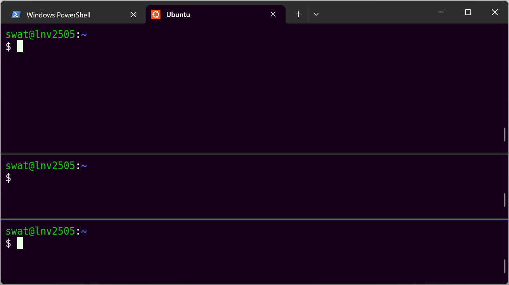
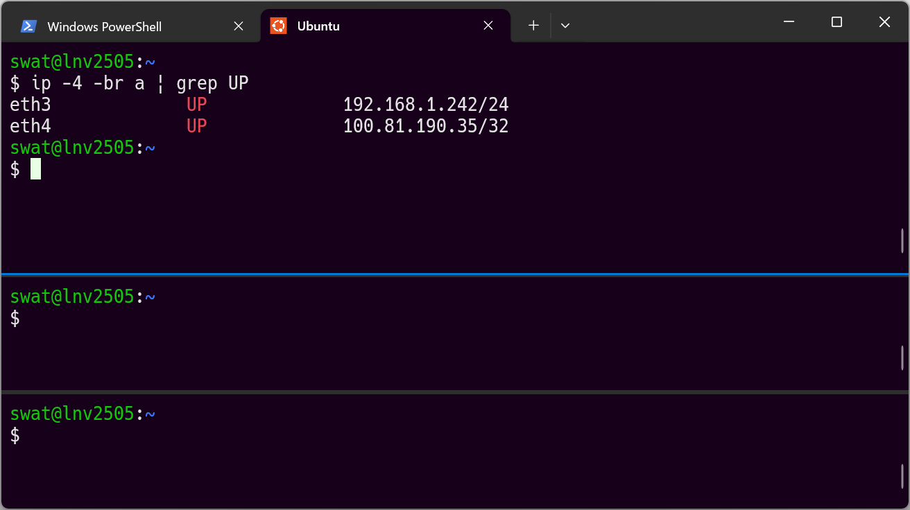
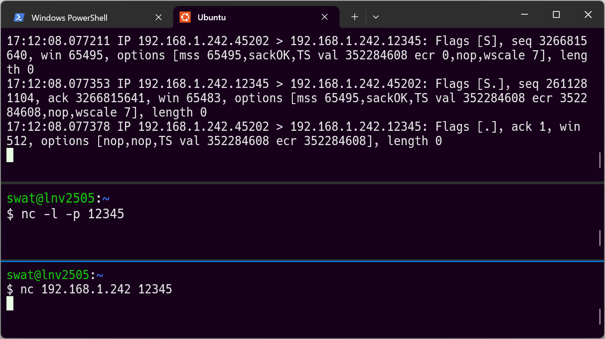
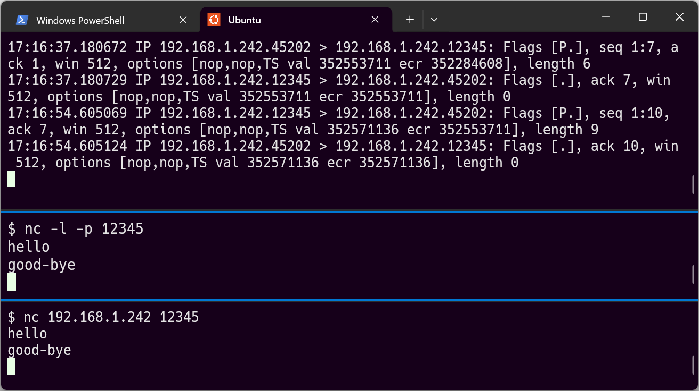

reading from file curl.pcap, link-type LINUX_SLL2 (Linux cooked v2), snapshot length 262144
Warning: interface names might be incorrect
eth3 Out IP 192.168.1.242.45376 > 222.158.205.72.80: Flags [S], seq 116484521, win 64440, options [mss 1432,sackOK,TS val 3242019354 ecr 0,nop,wscale 7], length 0
eth3 In IP 222.158.205.72.80 > 192.168.1.242.45376: Flags [S.], seq 1680624244, ack 116484522, win 14120, options [mss 1412,nop,wscale 0,sackOK,TS val 1836076075 ecr 3242019354], length 0
eth3 Out IP 192.168.1.242.45376 > 222.158.205.72.80: Flags [.], ack 1, win 504, options [nop,nop,TS val 3242019365 ecr 1836076075], length 0
eth3 Out IP 192.168.1.242.45376 > 222.158.205.72.80: Flags [P.], seq 1:87, ack 1, win 504, options [nop,nop,TS val 3242019365 ecr 1836076075], length 86: HTTP: GET / HTTP/1.1
eth3 In IP 222.158.205.72.80 > 192.168.1.242.45376: Flags [.], ack 87, win 14206, options [nop,nop,TS val 1836076086 ecr 3242019365], length 0
eth3 In IP 222.158.205.72.80 > 192.168.1.242.45376: Flags [P.], seq 1:776, ack 87, win 14206, options [nop,nop,TS val 1836076090 ecr 3242019365], length 775: HTTP: HTTP/1.1 200 OK
eth3 Out IP 192.168.1.242.45376 > 222.158.205.72.80: Flags [.], ack 776, win 510, options [nop,nop,TS val 3242019380 ecr 1836076090], length 0
eth3 Out IP 192.168.1.242.45376 > 222.158.205.72.80: Flags [F.], seq 87, ack 776, win 510, options [nop,nop,TS val 3242019381 ecr 1836076090], length 0
eth3 In IP 222.158.205.72.80 > 192.168.1.242.45376: Flags [.], ack 88, win 14206, options [nop,nop,TS val 1836076101 ecr 3242019381], length 0
eth3 In IP 222.158.205.72.80 > 192.168.1.242.45376: Flags [F.], seq 776, ack 88, win 14206, options [nop,nop,TS val 1836076101 ecr 3242019381], length 0
eth3 In IP 222.158.205.72.80 > 192.168.1.242.45376: Flags [F.], seq 776, ack 88, win 14206, options [nop,nop,TS val 1836077101 ecr 3242019381], length 0
eth3 Out IP 192.168.1.242.45376 > 222.158.205.72.80: Flags [.], ack 777, win 510, options [nop,nop,TS val 3242020392 ecr 1836077101], length 02 パケットの観察（tcpdump, nc）
2.1 目的
この章の目的は、次の通りです。
- tcpdumpを使ったパケットの取得・閲覧ができるようになること。
- netcatの2つのモードが使えるようになること。
- TCP/IPを用いた通信手順の概要を理解すること。
2.2 必要な準備
PCでWSL（Windows Subsystem for Linux）が使えるようになっている必要があります。
tcpdumpとbind9-dnsutilsとをインストールしてください。
sudo apt update- パスワードを聞かれたときには、入力してください。（以後の
sudoでも同様。）
sudo apt install -y tcpdump bind9-dnsutils2.3 tcpdump
pingの観察
自分自身（localhost）に対してpingを実施し、そのパケットを取得します。Ubuntuのターミナルを開いてください。
tcpdumpが認識するネットワークインターフェースを確認します。
sudo tcpdump -D1.eth0 [Up, Running, Connected]
2.any (Pseudo-device that captures on all interfaces) [Up, Running]
3.lo [Up, Running, Loopback]
4.bluetooth-monitor (Bluetooth Linux Monitor) [Wireless]
5.nflog (Linux netfilter log (NFLOG) interface) [none]
6.nfqueue (Linux netfilter queue (NFQUEUE) interface) [none]
7.dbus-system (D-Bus system bus) [none]
8.dbus-session (D-Bus session bus) [none]自分自身へのpingパケットを取得するので、3.loのパケットを取得するのが適切です。（みなさんの環境では、番号は異なっている可能性があります。）
sudo tcpdump -n -i lo 'icmp'-n: 名前解決をしない。-i lo: インターフェースにloを指定（番号で指定するのも可）。'icmp': ICMPプロトコルのパケットのみ取得。
次のように、tcpdumpが待ち受けになります。
tcpdump: verbose output suppressed, use -v[v]... for full protocol decode
listening on lo, link-type EN10MB (Ethernet), snapshot length 262144 bytesこのウインドウはそのままにしておき、別のウィンドウでUbuntuのターミナルを開きます。そして、自分自身にpingを実行します。
ping -c 2 127.0.0.2-c 22回実施する（指定しないとCtrl+Cで止めるまで続く）
PING 127.0.0.2 (127.0.0.2) 56(84) bytes of data.
64 bytes from 127.0.0.2: icmp_seq=1 ttl=64 time=0.236 ms
64 bytes from 127.0.0.2: icmp_seq=2 ttl=64 time=0.172 ms
--- 127.0.0.2 ping statistics ---
2 packets transmitted, 2 received, 0% packet loss, time 1021ms
rtt min/avg/max/mdev = 0.172/0.204/0.236/0.032 ms
ノート
127.0.0.0/8は、自分自身を意味するIPアドレス（ループバック）としてRFC 1122で予約されています。Linuxでは、localhostという名前が127.0.0.1に割り当てられています。（/etc/hostsを見て確認してください。）ここでは、tcpdumpのrequest/replyの組が見分けやすくなるように、よく使われる127.0.0.1ではなく127.0.0.2を用いました。
もう1度pingを自分自身に実行します。今度は3回にしてみます。
ping -c 3 127.0.0.2PING 127.0.0.2 (127.0.0.2) 56(84) bytes of data.
64 bytes from 127.0.0.2: icmp_seq=1 ttl=64 time=0.159 ms
64 bytes from 127.0.0.2: icmp_seq=2 ttl=64 time=0.046 ms
64 bytes from 127.0.0.2: icmp_seq=3 ttl=64 time=0.066 ms
--- 127.0.0.2 ping statistics ---
3 packets transmitted, 3 received, 0% packet loss, time 2053ms
rtt min/avg/max/mdev = 0.046/0.090/0.159/0.049 ms再びtcpdumpのウインドウに戻り、Ctrl + Cキーを押してキャプチャーを中断します。
ノート
Ctrl + Cは、Ctrlキーを押しっぱなしにしながらCキーを押すことを意味します。Windowsの「コピー」と同じ短縮キーです。
$ sudo tcpdump -n -i lo 'icmp'
tcpdump: verbose output suppressed, use -v[v]... for full protocol decode
listening on lo, link-type EN10MB (Ethernet), snapshot length 262144 bytes
11:00:12.353720 IP 127.0.0.1 > 127.0.0.2: ICMP echo request, id 9601, seq 1, length 64
11:00:12.353750 IP 127.0.0.2 > 127.0.0.1: ICMP echo reply, id 9601, seq 1, length 64
11:00:13.383826 IP 127.0.0.1 > 127.0.0.2: ICMP echo request, id 9601, seq 2, length 64
11:00:13.383846 IP 127.0.0.2 > 127.0.0.1: ICMP echo reply, id 9601, seq 2, length 64
11:01:29.608296 IP 127.0.0.1 > 127.0.0.2: ICMP echo request, id 10752, seq 1, length 64
11:01:29.608312 IP 127.0.0.2 > 127.0.0.1: ICMP echo reply, id 10752, seq 1, length 64
11:01:30.631788 IP 127.0.0.1 > 127.0.0.2: ICMP echo request, id 10752, seq 2, length 64
11:01:30.631816 IP 127.0.0.2 > 127.0.0.1: ICMP echo reply, id 10752, seq 2, length 64
11:01:31.655696 IP 127.0.0.1 > 127.0.0.2: ICMP echo request, id 10752, seq 3, length 64
11:01:31.655723 IP 127.0.0.2 > 127.0.0.1: ICMP echo reply, id 10752, seq 3, length 64
^C
10 packets captured
20 packets received by filter
0 packets dropped by kernel
Problem問題
pingの実行結果には、「56(84) bytes of data.」と書かれています。一方で、tcpdumpの取得結果には「length 64」と書かれています。なぜ20バイトの差が発生しているのでしょうか？
ヒント解答
pingとtcpdumpとでは、数えているバイト数の対象が異なります。pingの結果に出てきた56はICMPペイロードのバイト数、84はパケット全体のバイト数です。一方、tcpdumpの64はIPペイロードのバイト数を意味しています。つまり差分の20バイトは、IPv4ヘッダーの部分です。
digの観察
ICMPプロトコルに続いてUDPプロトコルを見ていきます。最もよく使われるUDPの1つはDNSでしょう。「阿部寛のホームページ」のFQDNを、digコマンドを使って名前解決します。そのパケットを取得し、観察しましょう。
Ubuntuのウインドウを2枚用意します。1枚目はtcpdump用、2枚目はdig用です。
1枚目のウインドウで以下のコマンドを実行し、パケットを待ち受けます。
sudo tcpdump -n -i lo -t 'udp and (port 53)'-n: 名前解決をしない。-i lo: インターフェースにloを指定（番号で指定するのも可）。-t: 日時を表示しない（画面を節約し、結果に集中するため）。'udp and (port 53)': 発信元または宛先のポート番号が53番であるUDPパケットを取得。
2枚目のウインドウに切り替え、名前解決をします。
dig +short abehiroshi.la.coocan.jp+short: 表示を最小限にして結果だけを得る。
222.158.205.72阿部寛のホームページはIPv6にも対応しています。IPv6のアドレスも確認しておきましょう。
dig +short AAAA abehiroshi.la.coocan.jpAAAA: IPv6アドレスのレコードを問い合わせる。
2001:258:8613:5000::101また失敗例として、存在しないドメイン名も問い合わせておきます。
dig +short example.jp1枚目のウインドウに戻って、Ctrl+Cキーを押してパケット取得を停止し、結果を確認します。（一部の数字は実行時ごとに異なります。）
$ sudo tcpdump -n -i lo -t 'udp and (port 53)'
[sudo] password for swat:
tcpdump: verbose output suppressed, use -v[v]... for full protocol decode
listening on lo, link-type EN10MB (Ethernet), snapshot length 262144 bytes
IP 10.255.255.254.46573 > 10.255.255.254.53: 58814+ [1au] A? abehiroshi.la.coocan.jp. (64)
IP 10.255.255.254.53 > 10.255.255.254.46573: 58814 1/0/1 A 222.158.205.72 (68)
IP 10.255.255.254.47038 > 10.255.255.254.53: 36348+ [1au] AAAA? abehiroshi.la.coocan.jp. (64)
IP 10.255.255.254.53 > 10.255.255.254.47038: 36348 1/0/1 AAAA 2001:258:8613:5000::101 (80)
IP 10.255.255.254.47662 > 10.255.255.254.53: 58328+ [1au] A? example.jp. (51)
IP 10.255.255.254.53 > 10.255.255.254.47662: 58328 NXDomain 0/1/1 (86)tcpdumpは、DNSプロトコルを解釈した結果を表示しています。以下に簡単に解説しますが、詳しくはDNSに関する書籍で学習してください。
1行目は、UDP 53番ポート（53/udp）宛てなので、DNS問い合わせのパケットです。10.255.255.254というIPアドレスはWSLに特有のものです。このIPアドレスが、ホストOSとの仲介役になって名前解決を行っています。
58814+の58814は問い合わせIDを意味します。また、+は、再帰可能フラグがセットされていることを意味します。言い方を変えると、クライアントがサーバーに対して名前解決を完全に行ってほしいと伝えているのです。
[1au]は、追加フィールドが1つ存在することを意味します。ほとんどの場合、EDNS0という拡張プロトコルです。DNSはもともと512バイトを超えるメッセージがそのままでは扱えなかった（TCPにフォールバックしていた）ところ、IPv6やDNSSECの登場に伴って長いメッセージを取り扱う必要性が増したことからEDNS0が定められました。
A? abehiroshi.la.coocan.jp.は、abehiroshi.la.coocan.jpのAレコードを問い合わせていることを意味しています。
2行目は、53/udpからのパケットなので、DNSサーバーからの応答です。1/0/1は、それぞれ「Answer / Authority / Additional」の数を意味しています。レコードが1つ返ってきたので1、それは権威情報を含んでいないので0、EDNS0の応答で1となっています。
3行目と4行目とは、1行目・2行目のIPv6版です。5行目と6行目とは、存在しないドメインへの名前解決をしようとしたときの例です。
Problem問題
www.jcom.co.jpをdigしたときの結果は、次の通りでした。
www.jcom.co.jp.cdn.cloudflare.net.
104.16.174.236
104.16.175.236tcpdumpでパケットを取得したとき、「Answer / Authority / Additional」の組はどのようになると思いますか？ 想像し、その後検証してください。
ヒント解答
次のように、「3/0/1」となります。
IP 10.255.255.254.48428 > 10.255.255.254.53: 13980+ [1au] A? www.jcom.co.jp. (55)
IP 10.255.255.254.53 > 10.255.255.254.48428: 13980 3/0/1 CNAME www.jcom.co.jp.cdn.cloudflare.net., A 104.16.175.236, A 104.16.174.236 (122)curlの観察
続いて、TCPプロトコルとしてHTTPを取り上げます。
Ubuntuのウインドウを2枚用意します。1枚目はtcpdump用、2枚目はcurl用です。
1枚目のウインドウで以下のコマンドを実行し、パケットを待ち受けます。これまではファイルを画面上に表示していましたが、今回はcurl.pcapという名前でファイル出力することにします。
sudo tcpdump -i any -w curl.pcap 'port 80'-i any: 全インターフェースを対象（本来は特定の1つを指定すれば十分）。-w curl.pcap:curl.pcapというファイル名で出力。'port 80': 発信元または宛先のポート番号が80番であるパケットを取得。
2枚目のウインドウに切り替え、阿部寛のホームページを閲覧します。
curl --ipv4 http://abehiroshi.la.coocan.jp/--ipv4: IPv4だけを使用する（出力結果をそろえるために指定）。
1枚目のウインドウに戻り、Ctrl+Cキーを押してパケット取得を停止させます。
^C12 packets captured
12 packets received by filter
0 packets dropped by kernelそのまま、ファイルが存在するかどうかを確認します。
ls -l curl.pcap-rw-r--r-- 1 tcpdump tcpdump 1957 Dec 30 13:11 curl.pcap
重要
もしlsの結果が
ls: cannot access 'curl.pcap': No such file or directoryであれば、のように表示されたら、パケットの取得に失敗しています。本節「curlの観察」の最初からやり直してください。
tcpdumpの-rオプションを用いて、いま取得したパケットを読みます。環境によってIPアドレスやインターフェース名は変化しますので、完全に同一の結果にはなりません。
tcpdump -n -t -r curl.pcap-n: 名前解決をしない。-t: 日時を表示しない（画面を節約し、結果に集中するため）。-r curl.pcap':curl.pcapを読み込む。
3行目から5行目において、TCPの3ウェイハンドシェイクを確立させています。Flagsフィールドが[S]->[S.]->[.]となっています。tcpdumpでは、ACKが.で表されます。
2.4 netcat
netcatは、Unixのネットワークソケットにバイナリ列を渡すだけのツールです。TCP/IP通信の観察がやりやすいですし、トラブルシューティングにも使えます。
今回は、netcatのプロセスを2つ使って自分自身に対する通信を行い、そのようすをtcpdumpで観察します。
その前に、2点準備をします。
WSLで画面分割を行う
リアルタイムで状況を観測したいのに、タブを切り替えるのは面倒です。WSLには、1つのタブの中で画面分割する機能が備わっています。分割された1つ1つの枠をペイン（pane）と呼びます。
左右（垂直軸）に分割する短縮キーはAlt + Shift + +、上下（水平軸）に分割する短縮キーはAlt + Shift + -です。
Alt + Shift + -を2回実行して、上下に画面を3分割してください。

1番のペインから、tcpdump、nc（サーバーモード）、nc（クライアントモード）に利用します。
自分のIPアドレスを確認する
以下のコマンドを使って、自分自身のIPアドレスを確認してください。
ip -4 -br a | grep UP-4: IPv4アドレスのみ表示する-br: 簡潔に表示するa: IPアドレスを表示する（addrの略）| grep UP: リンクアップしているものだけを抽出

上記は私の自宅のPCでコマンドを実行した場合の例です。VPN接続を行っているときには、複数のIPアドレスが表示されます。どのIPアドレスを使っても構いません。私はeth3のIPアドレスを使うことにします。
tcpdump
1番目のペインで次のコマンドを実行し、パケットを取得する準備に入ります。
sudo tcpdump -n -i lo 'port 12345'サーバーモード
2番目のペインで次のコマンドを実行し、netcatでTCP/IP接続を待ち受けます。
nc -l -p 12345クライアントモード
3番目のペインで次のコマンドを実行し、先に確認したIPアドレスに接続します。
nc IPアドレス 12345IPアドレスが正しければ、1番目のペインで3ウェイハンドシェイクの確立が見られます。

Problem問題
2つのnetcatで通信が確立した状態で、それぞれのペインで文字（半角英数）を入力し、先方に伝わることを確かめてください。
このとき、tcpdumpのseqやackの値の推移に着目し、その意味を考えましょう。
ヒント解答

上の画面は、クライアント側（最も下のペイン）でhelloと入力し、そのあとサーバー側（真ん中のペイン）でgood-byeと入力したときの状態です。
tcpdumpの結果の1行目（17:16:37.180672）は、seq 1:7、length 6とあります。length 6なのは、helloの5バイトに改行文字（0x0a）が付与されているためです。そしてseq 1:7は、1番目から6バイト送信し、先方からのACKの値が7になることを期待しているという意味です。
そして2行目を見ると、たしかにack 7となっているので、パケットが正常に到達していることがわかります。
ただし、tcpdumpが表示するシーケンス番号は相対値です。絶対値で見たいときには-Sオプションをつけてください。
2.5 追加課題
GitHubから入手できるpcapファイルを調査します。以下のコマンドを使って、ファイルをダウンロードしてください。
wget https://raw.githubusercontent.com/markofu/pcaps/refs/heads/master/PracticalPacketAnalysis/ppa-capture-files/ftp.pcap
Problem問題
先頭のパケットが取得された日時（YYYY-MM-DD HH:NN:SS）をUTCで回答してください。
ヒントヒント
-ttttオプションを使うと、人間が読める形式になります。
ヒント解答
TZ=UTC tcpdump -n -tttt -r ftp.pcap -c 12006-12-16 17:24:40。tcpdumpはローカル時間で表示します。UTCで表示するには、最初にTZ=UTCを付加しておきます。
Problem問題
このファイルに登場するIPv4アドレスを、すべて列挙してください。
ヒントヒント
cutコマンドを駆使して、必要なフィールドだけを切り抜きます。
たとえば
2006-12-16 17:24:43.167931 IP 192.168.0.193.7254 > 192.168.0.114.1140: から「192.168.0.193」の部分を抽出したければ、
cut -d ' ' -f 4 | cut -d '.' -f 1-4です。
-d: 区切り文字を指定。-f: フィールド番号を指定。
ヒントヒント
sortやuniqコマンドによって重複を排除します。
ヒント解答
tcpdump -n -tttt -r ftp.pcap | cut -d ' ' -f 4 | cut -d '.' -f 1-4 | sort | uniqを実行すると、送信元IPアドレスは
192.168.0.114
192.168.0.193
63.245.209.21の3つであることが分かります。宛先でも同様にすると
tcpdump -n -tttt -r ftp.pcap | cut -d ' ' -f 6 | cut -d '.' -f 1-4 | sort | uniq同じ結果を得るので、上記の3つのIPアドレスがすべてです。
Problem問題
FTPサーバーと思われるIPアドレスは何でしょうか？
ヒントヒント
FTPサーバーは、通常21/tcpで接続を待ち受けます。
ヒント解答
tcpdump -n -tttt -r ftp.pcap 'dst port 21' -c 1すると、192.168.0.193が21番ポートで接続を受け付けていることが分かります。よって、FTPサーバーは192.168.0.193です。
Problem問題
FTPサーバーのユーザー名とパスワードは何ですか？
ヒントヒント
FTPサーバーの通信は暗号化されていません。
ヒント解答
tcpdump -n -tttt -r ftp.pcap 'dst port 21' -c 13本目にUSERが、4本目にPASSが見えます。それぞれ、csandersとechoです。
2.6 参考資料
- Charles M. Kozierok「The TCP/IP Guide」
- ネットワークエンジニアとして「TCP/IP」
- SEの道標「ICMPとは」
- SEの道標「初心者にも分かるTCP/UDP」
- SEの道標「TCPコネクションのシーケンスと状態確認」
- The Tcpdump Group「TCPDUMP and LIBPCAP」
- 杜甫々「とほほのtcpdump入門」
- 大角祐介「ネットワーク診断の現場から（netcat編・その1）」
- 大角祐介「ネットワーク診断の現場から（netcat編・その2）」
- NETERSEC「Publicly available PCAP files」